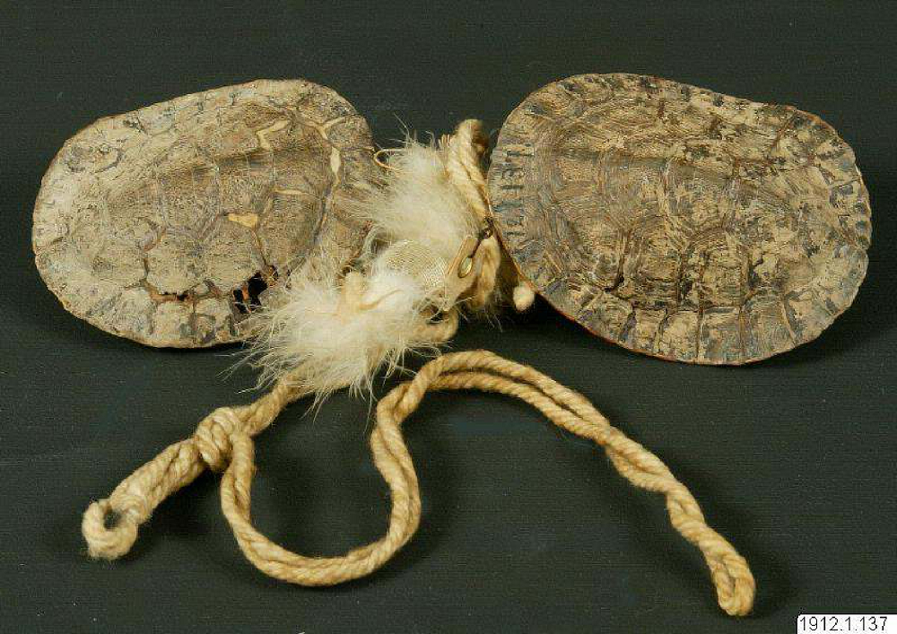

Sounding turtles of Venezuela, Brazil and the Guianas
Sketch 015
Home > Blog A Musician's Log > Sketch 015
Turtle shells have been used for a long time in the five continents as raw material for the elaboration of different types of musical instruments.
In Venezuelan territory, and according to Nina Hurtado Dueñez, the Piaroa or Wötihä people (Amazonas state) use the rere, and the Ye'kuana or Maquiritare (Bolívar and Amazonas states, and neighboring regions of Brazil), the wayaamö ji'jo or kodedo. The rere is a shell of a turtle chipiro or terecay (Podocnemis unifilis) with one end covered in wax or resin, on which the thumb or index finger is rubbed. It is used only by men in secular contexts, such as in the re-re dance, before and after the wärime, a complex annual ritual of thanksgiving for the crops. The wayaamö ji'jo, for its part, is a shell of a morrocoy (red-legged land tortoise, Chelonoidis carbonaria) interpreted using the same system as the previous one (wax rubbed with the edge of the hand), also performed by males, but accompanying the sound of the panpipes suduchu, usually played by another musician.
This combination of panpipes and rubbed tortoise shells also appears among the Wayana of the Maroni and Litani rivers, on the border between Suriname and French Guiana. The flute is called luweimë and has 5 pipes; the idiophone is usually named after the tortoise from whose shell it is made (kuliputpë or yellow-footed land tortoise, Chelonoidis denticulata, or pupu or terecay, Podocnemis unifilis). The performer holds the luweimë in his left hand and the carapace under the armpit of the same arm, and rubs the breastplate with a twig he wields with his right hand. Its use, unfortunately, is increasingly scarce.
The nearby Wayampi people of the Camopi and Oyapock rivers (French Guiana) have panpipes similar to the luweimë, which they play alongside a pupu turtle shell. The Waiwai (southern Guyana and border areas of the Brazilian states of Roraima and Pará), for their part, have the oratín, made from the shell of the kwochí marsh turtle, according to F. W. Bentzon. They accompany with it the sound of a reed whistle while they dance.
In Brazil, in addition to the shells used by the peoples described above, Bentzon mentions an instrument similar to that of the Waiwai people, used among the Hixkariyana, Mawayana, Kaxuyana and Shereó in the north of the Pará state. In some museum collections there are specimens built by the Karajá people from the states of Goiás and Tocantins.
More information about these sound artifacts can be found in the free-access digital book Turtle shells in traditional Latin American music, accessible through the "Digital books on music. Series 1" section.